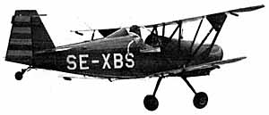
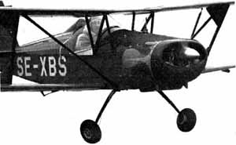

RULES:
Note: These are 1969 Peanut Scale rules and were ammended slightly for the contest.
- Models must be built-up reproductions of actual man-carrying aircraft.
- The maximum permitted wingspan is 13 in.
- The minimum permitted wingspan is 10 in.
- Motive power must be furnished by rubber band(s).
- Models will be hand-launched.
- Timing will commence upon release and will stop when model lands.
- Any flight of six seconds or more will be counted as an 'official'.
- Three official flights are allowed, and total will be contestant's score.
SANCTION:
All Peanut Scale contests will be sanctioned by the Great God of the Thermals, HUNG.
 The Model:
The Model:
Bjorne Andreason's airplanes all seem to look right and fly right also. The author flew the original BA-7 in California when it was first built, so when the three view of the BA-4B was published in the Experimental Aircraft Association's journal, 'Sport Aviation' he just had to build a model of it. Peanut Scale, with a limit of 13 inches maximum span has lots of appeal so the BA-4B model was designed to be a 'Peanut Scale'. As a flying model it turned out really fine and flew right off the board. Early flights with a twelve inch loop of one eighth flat Pirelli were between thirty and forty seconds with the landing under power. Later flights. outdoors, with a shorter motor - and more climb disclosed a slight lack of vertical tail area which caused the model to spiral down to the right in the glide if it was adjusted to fly well under high power. A clear plastic tail extension was added to the model and it flies and glides well. This extension is indicated on the plans and perhaps can be discerned in the photos.
Construction of the model is very much standard for a small rubber scale biplane. Therefore we will touch only the highpoints of the construction sequence and the few deviations from standard procedures.
The fuselage is a box frame made up of two side frames with cross-braces and formers and stringers added on the top. Build the frames over the plans noting that the cabane struts are an integral part of the side frames to simplify later assembly of the upper wing to the fuselage. Because most models tend to be tail heavy, shaping of the side and bottom nose contour is done with balsa blocks. The upper nose contour is wrapped sheet balsa trimmed to size on assembly. Note that the bottom of the fuselage is narrower than the top, requiring shorter cross pieces than the top. This is important later because it will make the cabane struts wide enough apart at the top to fit the upper wing root ribs.
The tail surfaces are made flat over the plans from one sixteenth square balsa. Round the edges after they are removed from the plan.
Both the upper and lower wings can be built over the single wing drawn. A centre section is constructed between the two outer panels for the upper wing. The lower wing just consists of a right and left outer panel which is finally attached to the fuselage. All wing ribs are identical. Note the airfoil shape of the wing tip piece. After the wing structures are dry sandpaper the leading edge and the trailing edge to the shape shown at the rib drawing. Then cut the top wing at the arrows outlining the centre section, leading edge, trailing edge, and spar. Block up each tip for the proper dihedral, trim the spar length to fit, and re-cement.
 Nose block, propeller shaft, and tube bearing follow common practice. I recommend any plastic propeller that is the right diameter or that can be cut down to the right diameter easily. Half the landing gear wire shape is shown in the front half-view. It should be bent symmetrically and cemented in place in the fuselage. Thin balsa fairings are used to simulate the real spring leaf leg.
The model can be covered with your favourite lightweight tissue. The real BA-4B is metal, but since this is a homebuilt type almost any colour scheme is possible. The original used blue and yellow tissue and the authors took some liberties with the registration in the name of amusement. After covering, shrink the tissue by lightly spraying it with water and let it dry. Then using dope, thinned about two parts thinner and one part dope, lightly coat the parts. When dry give only the fuselage one more coat of dope.
Install the windshield. Cut a slot in the aft stringers just above the side frames to insert the horizontal tail. Cement the vertical tail in place on the top stringer and aft end of the fuselage but do not get cement on the horizontal. Cement the top wing in place. The side view is drawn without dihedral so the wing struts could be shown exact size. Make the struts and cement in place on the top wing. Now the lower wing can be cemented to the fuselage and to the struts and should be easy to position properly.
This biplane has no wires so all you have to add to the structure is the lift strut running from the fuselage just above the landing gear to the front of the interplane strut at the upper wing. See the front half-view for the lift strut length.
Add other details as desired, spinner, fuel tank cap, exhaust stacks, etc. Add a tailwheel (it doesn't have to roll, in fact, its better if it doesn't because the model won't fall off shelves or tables so easily). Main wheels can be made from balsa if you so desire or any available the right size can be used. A drop of cement applied carefully to the end of the wire will retain them, but be sure they roll freely.
Ballast the model as required to get the centre of gravity in the spot shown on the side view. It will probably need very little, the amount depending on the weight of your components. Try some hand glides and shim the leading edge of the horizontal tail up or down as required to get a smooth glide. The glide will not be flat because a biplane is relatively loaded with drag. A glide ratio of 2+ to 3 is all you can expect.
Now start power flights with only a few winds in the motor, gradually working up to the maximum you can get in the motor (less one turn, of course). Use shims between the noseblock and the cowl to make the model go in the direction you want it to when it is under power.
One thing you'll like about Peanut Scale is that they are nearly indestructible by their own actions and another is that they don't cost much to build. So go Peanuts!